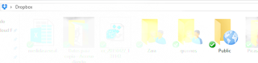
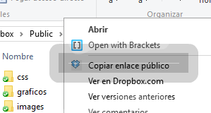

En una entrada posterior hablaremos de las distintas opciones de licencias para compartir materiales docentes. En esta entrada quiero repasar las alternativas a la hora de hacer disponibles estos materiales online.
Si lo que nos interesa es simplemente que los archivos sean accesibles a través de un vínculo, la opción más sencilla es utilizar algún servicio de almacenamiento como Dropbox, Google Drive o One Drive. Los tres servicios ofrecen un espacio gratuíto interesante y una capacidad mayor por suscripción.
Compartir archivos en estos servicios es realmente sencillo. En Drobox o en OneDrive no hay más que crear una carpeta que se denomine “Public”:


Cualquier documento que depositemos en esta carpeta estará disponible directamente de manera pública. Para saber cuál es el vinculo, pulsamos con el botón derecho del ratón en el archivo y elegimos la opción “Copiar Vínculo Público” .
Un aspecto interesante de esta opción, es que nos permite alojar páginas web completas en Dropbox, depositando los archivos necesarios y enlazando al archivo index.html. Lo mismo es válido para las transparencias en Reveal.js ](https://dl.dropboxusercontent.com/u/28980390/marketingMII/tema1/index.html) (actualización 2019: Esta opción de publicación html en el repositorio Public está desactivada en las versiones actuales de Dropbox )
Cuando lo que pretendemos es que alguien pueda encontrar estos documentos o consultar todo el material, es necesario además hacer disponible de forma sistemática todo el conjunto de enlaces. Para ello, una primera opción es la creación de un blog.
Esta opción nos da la mayor flexibilidad posible ya que la podemos configurar exactamente a nuestro gusto, pero tiene la desventaja de tener una visibilidad relativamente reducida.
Si lo que nos interesa es llegar a la mayor audiencia posible, la mejor opción es unirnos a alguna de las plataformas específicamente diseñadas para tal fin. La más popular para el caso de presentaciones es SlideShare pero no solo podemos subir presentaciones, sino también videos o cualquier documento en pdf.
Más orientado a documentos y con una larga trayectoria tenemos a Scribd. En este caso podemos subir incluso libros en formato EPUB y podemos haceros disponibles públicamente o a cambio de un precio que elegimos. Scribd se está transformando en una plataforma de lectura por suscripción mensual, pero sigue siendo una buena plataforma también para contenidos docentes.
Por último, tenemos tres opciones interesantes para editar y compartir materiales con formato de “revista digital” a partir de un documento en Word o PDF. Calameo, Flipsnack e Issuu tienen opciones básicas gratuitas que, de manera muy sencilla, permiten editar cosas como esta: